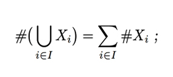

Dans le dur monde du jeu vidéo, tous les titres ne sont pas égaux. Certains deviennent des succès planétaires et d'autre finissent rapidement aux oubliettes. Une différence entre ces deux catégories, c'est ce que j'appellerai l'identité.

Lire la suite
Je viens de finir un livre intitulé Interactive Storytelling, par Andrew Glassner. Bien que les premières centaines de pages constituent une introduction utile à la narration et au game design (pour les débutants, du moins), le livre a de sérieux défauts et je ne peux pas vraiment vous le recommander. Mais en cours de route, Glassner fait des digressions sur divers sujets, dont les modes de difficulté réglables. Il est contre. Il pense qu'ils devraient être bannis.
Je me suis arrêté net quand j'ai lu ça. Mon opinion se situe à l'exact opposé : les modes de difficulté réglables devraient être obligatoires dans la plupart des jeux. En fait, je considère l'absence de modes de difficulté réglables comme une TDC (NDT : voir la rubrique « Pas de biscuit ! »), à l'exception de quelques types de jeux pour lesquels ils ne sont pas adéquats. Dans la mesure où j'y suis tellement attaché, j'étais particulièrement intéressé par les arguments de Glassner à leur sujet. J'y ai jeté un œil et je vais essayer d'y répondre, avant de parler de son alternative favorite, l'ajustement dynamique de la difficulté (aussi connu sous le nom de difficulté adaptative).
Lire la suite
ou
le commentaire
« Les riches s'enrichissent et les pauvres s'appauvrissent », avait l'habitude de dire mon père lors des derniers tours d'une partie de Monopoly familiale. Vu qu'il était le seul d'entre nous à l'époque à réellement comprendre les principes stratégiques du jeu, c'était en général lui qui s'enrichissait.

Il y a huit ans, j'ai écrit un article intitulé « Equilibrer les jeux grâce à la rétroaction positive ». Dans celui-ci, j'explique dans quelle mesure la rétroaction positive peut intervenir dans des mécaniques de jeu : c'est la tendance qu'ont les réussites du joueur à s'auto-entretenir et à renforcer le joueur. La rétroaction positive aide le joueur riche à devenir encore plus riche au Monopoly. Mais que faire pour le joueur pauvre qui devient encore plus pauvre ?
Lire la suite
Les ordinateurs ont été inventés pour manipuler des nombres. La machine à différences de Charles Babbage a été construite pour calculer des polynômes et Lady Lovelace a écrit le premier programme de sa machine analytique pour calculer ce qu'on appelle les nombres de Bernoulli. Ce n'est que bien plus tard que les ordinateurs furent utilisés pour des tâches appliquées comme l'artillerie. Et c'est encore plus tard que les jeux vidéo furent inventés. Nous avons placé une couche de vernis sur une simulation mathématique pour créer un monde imaginaire, mais souvent le vernis n'est pas très épais. C'est particulièrement visible dans les simulations économiques et les jeux de rôles. On gagne en regardant des chiffres sur un écran.

Lire la suite
ou
les 5 commentaires

Il y a tout juste une semaine se terminait la 21ème édition du Ludum Dare, une compétition de développement de jeu en temps limité. Les règles sont simples : tous les outils sont autorisés et les participants doivent travailler seul pour produire from scratch un jeu complet en respectant un thème imposé.
Cette année, un total de 599 (!!) jeux ont été réalisés à l'occasion de l'évènement (dont ~90 d'entre eux hors-concours avec un peu plus de personnel ou de temps). Évidemment, je faisais partie de la fête et cet article sera consacré à mon récit des évènements. Voici tout d'abord Ernest, the Plump Adventurer (in trouble), ma participation avec laquelle je vais vous bassiner pendant le reste de cet article.
Lire la suite
ou
les 16 commentaires
Ma vie a été un peu bizarre ces derniers temps. L'autre jour, j'avais décidé d'être chanteur d'opéra et puis finalement je me suis retrouvé coincé dans le château d'un vampire. Quelques heures plus tard, je me suis retrouvé dans la peau d'une adolescente de dix-sept ans un peu stupide et je ne sais comment, j'ai remonté le temps et l'espace pour me retrouver au milieu des Caraïbes à l'époque des pirates et, oh mon Dieu ! Je ne trouve plus mon nécessaire de maquillage !
Et puis je suis devenu un flic du nom de Phoenix Wallis, qui enquête sur un meurtre dans une utopie profondément dérangeante, et maintenant je suis un minuscule tyran qui essayer de récupérer son royaume volé par un usurpateur.
Au cas où vous ne l'auriez pas deviné, je joue à quatre jeux d'aventures en même temps. C'est marrant, même si c'est un peu déstabilisant. Et tout ça en une seule journée. Plus tôt dans la semaine, j'avais essayé de devenir la reine de la promo dans mon lycée et j'ai aussi aidé un fameux archéologue à découvrir les secrets d'une amulette magique.
Lire la suite
ou
les 3 commentaires

En 1995, j'ai donné une conférence à la Computer Game Developer's Conference au cours de laquelle j'ai identifié plusieurs des problèmes de la narration interactive. J'ai repris ces idées quelques années plus tard dans l'un des articles du Designer's Notebook intitulé « Trois problèmes de la narration interactive » et j'y ai suggéré qu'au lieu d'essayer de raconter des histoires, nous devrions essayer de construire des univers dans lesquels des histoires peuvent se produire — des univers où les joueurs puissent vivre des histoires de leur propre création. L'industrie ne disposait d'aucun terme spécifique pour ceci à l'époque, et j'ai proposé le nom de sandbox storytelling.
Dans le cadre d'un jeu bac à sable, l'idée est de présenter au joueur un grand monde ouvert truffé d'opportunités pour réaliser des interactions. Le joueur n'est pas obligé de suivre une intrigue linéaire comme un rail, mais peut interagir avec le monde dans l'ordre dans lequel il souhaite. Si le monde est correctement construit, une expérience narrative devrait naitre spontanément.
Lire la suite
ou
le commentaire
Et c’est reparti ! Les messages sont arrivés, les gens ont parlé et j’ai maintenant une demi-douzaine d’autres erreurs de game design à vous présenter, pour que les évitiez. Je suis toujours très intéressé par le sujet, donc si vous pensez à certaines, prenez soin de m’envoyer un message à notwinkie@designersnotebook.com (NDT : en anglais).
Comme toujours, une mise en garde : même les bons jeux peuvent contenir de mauvais choix de game design. Ce n’est pas parce qu’un jeu est cité ici qu’il est mauvais. Parfois, c’est juste un bon jeu avec une erreur à un moment.
Et passons maintenant aux TDC.
Lire la suite
ou
les 3 commentaires
La raison pour laquelle les fins de jeu craignent (pour la plupart, naturellement) a déjà été traitée, mais je voulais en parler dans une perspective spécifiquement narrative.
Donc. Les fins de jeux craignent parce qu'elles sont le dernier élément développé, qu'il n'y a plus de budget, que tout le monde est crevé et parce que la plupart des joueurs ne les regardent jamais de toute façon. Il y a deux choses qui me frappent particulièrement : pourquoi les joueurs ne regardent-ils jamais la fin, et pourquoi personne ne parle-t-il de l'histoire ?

Lire la suite
ou
les 8 commentaires
Certains, en lisant ce titre quelque peu opaque, ont pu se demander « Mais de quoi il parle cet article ? ». Avant de m'étendre sur le sujet, je commencerai donc par clarifier ce point. Les DLCs, ou downloadable contents dans la langue de Shakespeare, sont des contenus additionnels téléchargeables pour un jeu qui reprennent le principe de l'extension, à la différence près que l'absence de support physique fait que ces contenus peuvent être gratuits (ou pas) et sont généralement téléchargeables depuis le jeu ou un support fourni avec (Steam, Xbox Live, PSN, etc.).

Derrière le terme barbare d'achats par micro-paiement, se cache l'acquisition de contenu utilisable dans le jeu, comme de l'or, des objets ou un déguisement de bisounours pour votre barbare, bref tout ce qui peut passer par la tête des responsables du projet, par le truchement d'une transaction réelle (comprenez « en balançant l'oseille »).
Lire la suite
ou
les 3 commentaires